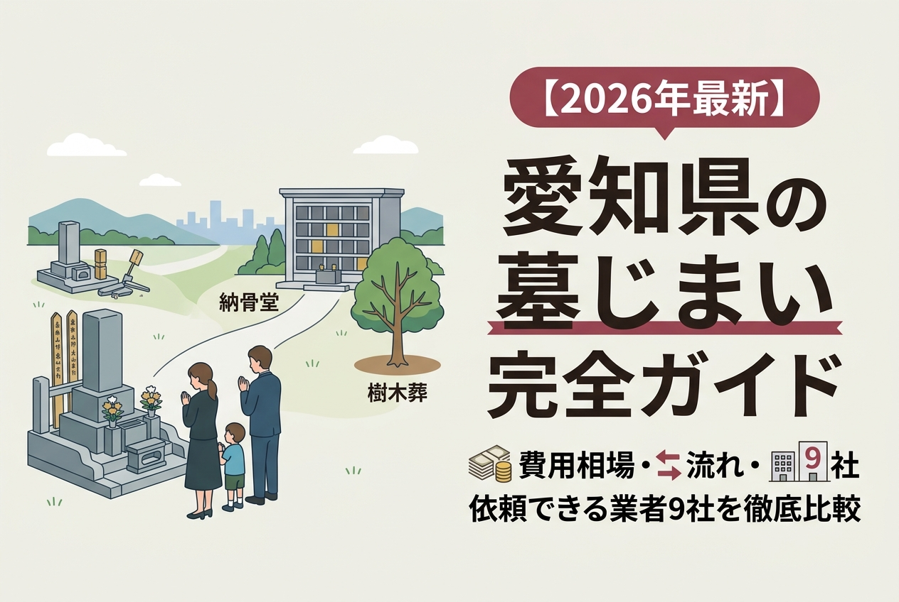
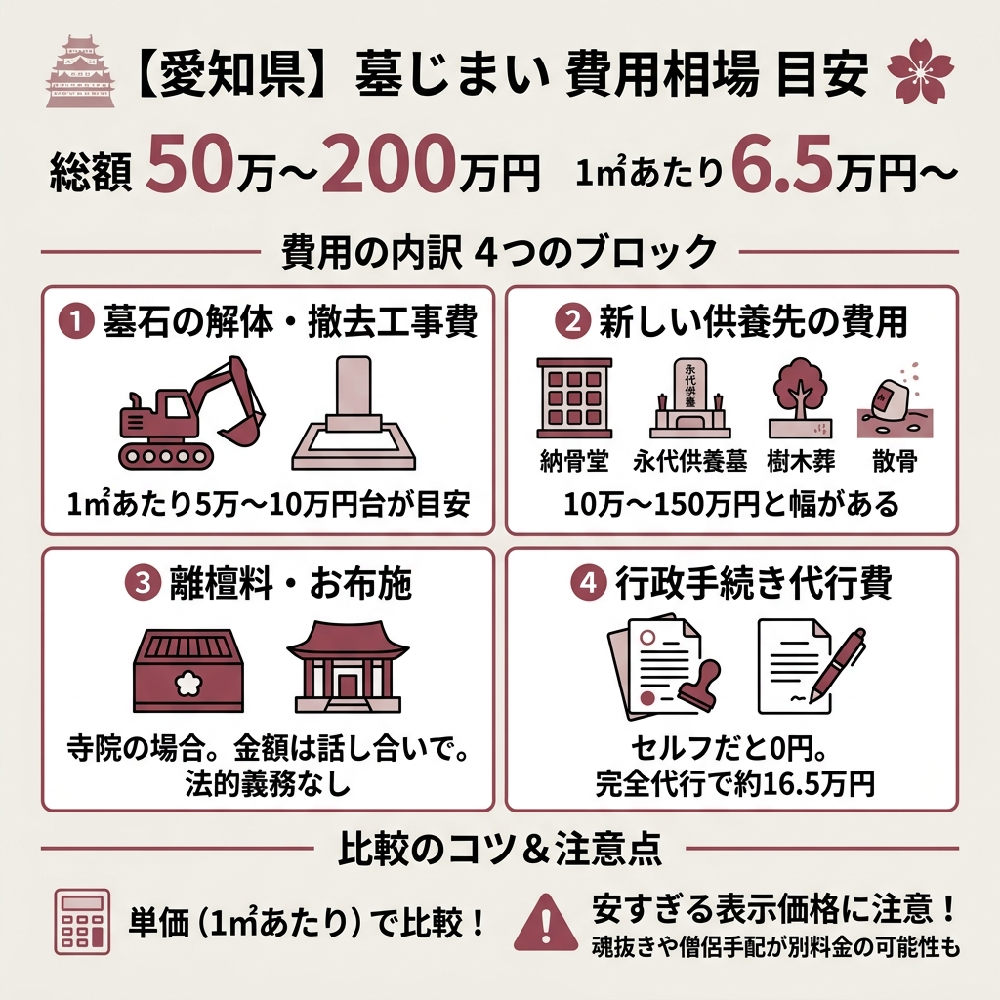
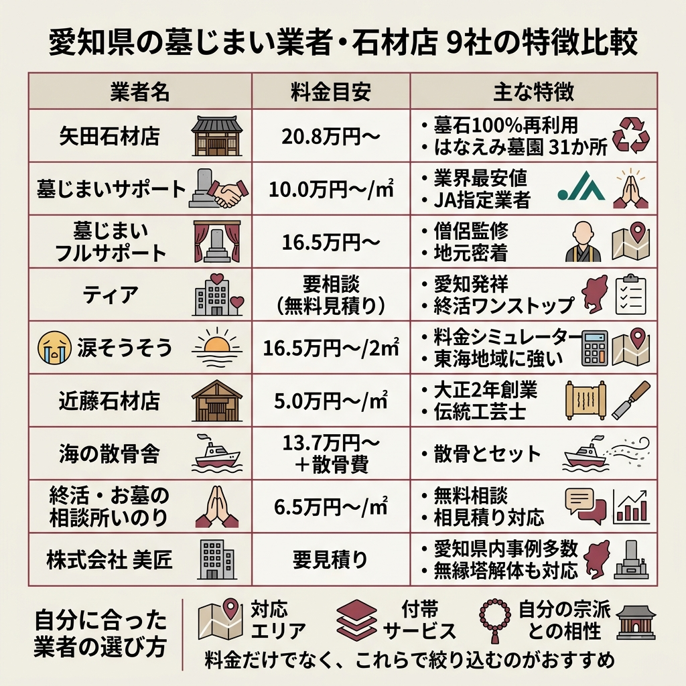
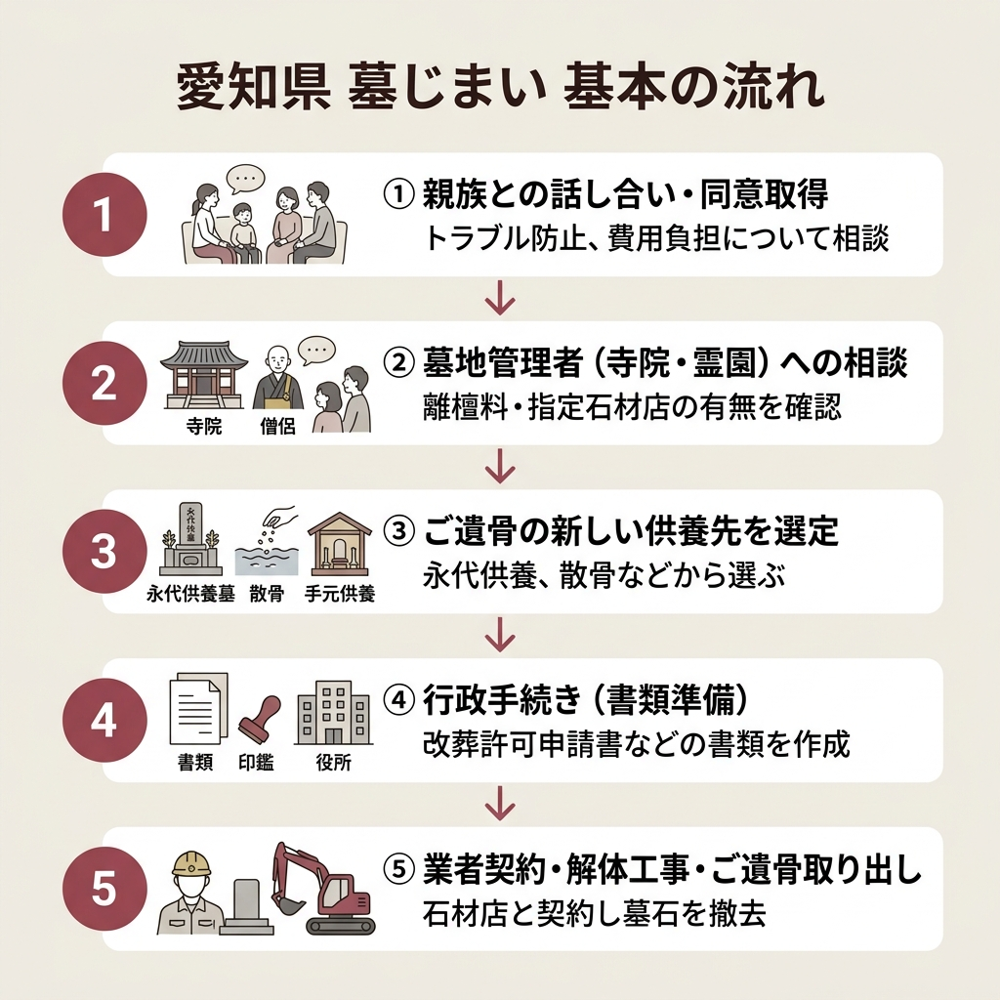
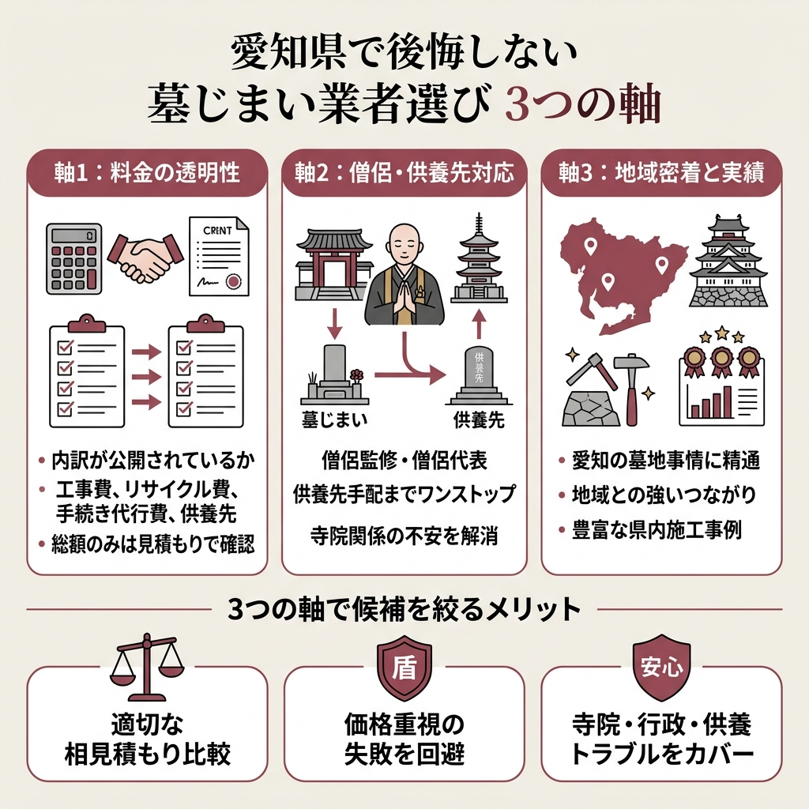

【2026年最新】愛知県の墓じまい業者9社を徹底比較｜費用相場・補助金・手続きの流れまで完全ガイド

「実家の愛知のお墓、そろそろ墓じまいを考えたい。でも費用もわからないし、どこに頼めばいいのか見当もつかない」。
そんな声、愛知県内で本当に増えています。
実際、矢田石材店が発表したデータによると、2022年の愛知県内の墓じまい件数は6,096件。この10年でなんと約3.8倍に増えているそうです。継承者不在、遠方からの管理負担、高齢化。背景はさまざまですが、どの家庭にも共通するのは「失敗したくない」という気持ちです。
このページでは、愛知県エリアで墓じまいに対応している9社の料金・特徴・対応エリアを横並びで比較しました。1㎡あたりの単価、コミコミ範囲、僧侶手配の有無まで、実際に公開されている情報だけで整理しています。
- 愛知県の墓じまい費用相場と料金の内訳
- 9社の料金・特徴をまとめた比較表
- 離檀料トラブル・親族同意など手続き上の注意点
- 補助金・助成制度の調べ方
- 後悔しない業者の選び方3つの軸
愛知県の墓じまいって、結局いくらかかるの？見積もりの単位もバラバラで比較しづらくて…
1㎡あたり6.5万円〜10万円台が業者の公表値で、総額は50万〜200万円レンジが目安です。この記事では9社の単価をそろえて並べるので、自分のお墓サイズと照らせば相場感はつかめますよ。

愛知県の墓じまい費用相場は「総額50万〜200万円」「1㎡6.5万円〜」が目安
結論から言います。愛知県の墓じまい総額は、50万〜200万円レンジで収まるケースが多数です。
これは「終活・お墓の相談所 いのり」が公開している相場の目安。お墓の大きさ・立地条件・供養先のタイプで料金はかなり変動します。そのうえで、各社が公表している単価や最安構成を並べ替えると、相場感はかなりクリアになります。
料金の内訳は「工事費」「供養先」「離檀料」「手続き代行」の4ブロック
墓じまい費用を理解する一番の近道は、総額ではなく内訳で見ること。
というのも、業者ごとに「どこまでが基本料金に含まれているか」がバラバラだからです。
①墓石の解体・撤去工事費：お墓のサイズと重機の入り方で決まる。1㎡あたり5万〜10万円台が各社の公表価格帯。
②新しい供養先の費用：永代供養墓・納骨堂・樹木葬・散骨など選ぶタイプで10万〜150万円と幅がある（いのり談）。
③離檀料・お布施：寺院墓地の場合に発生しうる。金額は話し合いで決まり、法的義務はない（涙そうそう・フルサポート説明より）。
④行政手続き代行費：セルフだと0円、完全代行だと16.5万円ほど（矢田石材店の公開料金）。
単価を「1㎡あたり」でそろえると比較しやすい
各社の公表価格を1㎡ベースでそろえると、6.5万円〜16.5万円の範囲に収まります。
安い順に並べると、いのりの6.5万円／㎡、菩提樹の10万円／㎡、近藤石材店の5万円／㎡（税別）、フルサポートの15万円／㎡、涙そうそうの16.5万円／2㎡あたり、など。価格表の表示方法が違うので、見積もりを取るときは必ず「1㎡あたり」に換算してもらうのが比較のコツです。
愛知県で墓じまいが増えている数字的な背景
数字で追うと、愛知県の墓じまいはもはや特殊な選択肢ではありません。
むしろ「次の世代に負担を残さない現実的な選択」として、10年で4倍近くに伸びているのが実情です。
愛知県でお墓を放置するとどうなる？無縁墓と強制撤去のリスク
墓じまいを決めきれない理由は多いですが、放置はもっと怖い結果を生みます。
涙そうそうの解説によれば、継承者が見つからず管理料が一定期間未払いだと、そのお墓は「無縁墓」とみなされ、墓地管理者が強制撤去手続きを進めることになります。
無縁墓と認定されると、管理者側の判断で強制的に撤去され、中のご遺骨は合祀墓に埋葬されます（墓じまいサポート解説）。つまり一度合祀されると、骨壷として取り出すことは基本的にできません。
もうひとつ怖いのがお金の話。
涙そうそうによれば、無縁墓の撤去費用や滞納分の管理費を、あとからご親族にまとめて請求されるケースも報告されています。自治体や管理者が一時的に立て替えるパターンもありますが、結果的に税金負担が増え、地域住民のサービス原資が削られる構図です。

愛知県の墓じまい業者9社を料金と特徴で一覧比較
ここからが本題。
愛知県で墓じまいに対応している9社を、公表されている料金と特徴で横並びにしました。相場感を先につかみたい人はこの表だけ眺めればOKです。
| 業者 | 料金の目安 | 強み |
|---|---|---|
| 矢田石材店 | 最安構成208,500円（税込）〜 | 墓石100%再利用・はなえみ墓園31か所 |
| 墓じまいサポート（菩提樹） | 1㎡あたり100,000円 | 業界最安値級・僧侶代表 |
| 墓じまいフルサポート（三昧堂） | 総額150,000円〜（税込165,000円〜） | 僧侶監修・愛知地元密着 |
| 涙そうそう | お墓処分・撤去2㎡165,000円〜 | 写真見積り対応・多角サポート窓口 |
| 近藤石材店 | 50,000円／㎡（税別）〜 | 岡崎創業・遠方依頼対応 |
| 終活・お墓の相談所 いのり | 1㎡あたり65,000円〜（税別） | 相見積り歓迎・ワンストップ相談 |
| 株式会社 美匠 | 公式サイトで確認 | 愛知県の施工事例が豊富 |
| 海の散骨舎 | 工賃125,000円＋散骨代行35,000円 | 墓じまい＋海洋散骨セット |
| ティアのお墓・供養 | 公式サイトで確認 | 樹木葬・永代供養とセット相談 |
料金欄を見てもらうと一目瞭然ですが、表示単位が「1㎡あたり」「総額」「最安構成」とバラバラ。自分のお墓の大きさに合わせて再計算するのが必須です。
1㎡単価が安く見える業者でも、魂抜きや行政手続きが「別料金」になっていることがあります。矢田石材店のように工事費・リサイクル費・手続き代行を分けて公開しているパターンが一番フェアで、見積もりを他社に取るときの「質問ひな形」にも使えます。
矢田石材店｜岡崎創業70年・墓石100%再利用の環境循環型
 出典: yatasekizai.com
出典: yatasekizai.com愛知県の墓じまい業者の中で、料金体系の透明さが飛び抜けているのが矢田石材店です。
1955年（昭和30年）に岡崎市で創業し、愛知県で70年。創業年も資格も全部公開しているうえ、料金を「工事費／リサイクル費／手続き代行費」と3階層で提示しているので、「結局総額いくら？」の計算がしやすい構成になっています。
S・M・Lの3段階で決まる明確な工事費

矢田石材店の公式ページには、工事費が職人の人数とサイズで3つに分かれて載っています。
・Sサイズ（職人2名で施工）：132,000円
・Mサイズ（職人3名で施工）：264,000円
・Lサイズ（職人4名で施工）：396,000円
加えて、リサイクル費が1トンあたり16,500円。手続き代行はセルフプラン0円／支援プラン66,000円／完全代行プラン165,000円の3段階です。
矢田石材店が公開している最安構成はこちら。
工事費S 132,000円＋リサイクル費 16,500円＋セルフプラン 0円＋はなえみ合祀墓 60,000円＝合計208,500円（税込）。「一式」で押し付けず、どこで削れるかを客がコントロールできる料金設計です。
受け皿は愛知県内31か所の「はなえみ墓園」

墓じまい後の供養先がないと、話は進みません。
矢田石材店は受け皿として「はなえみ墓園」を愛知県内31か所で運営しています。永代供養が全ての区画に付いており、個別墓の管理費は年間1万円。宗旨宗派を問わずに利用できます。
解体から再資源化までを社内で完結
面白いのが、解体した墓石の扱いです。
矢田石材店は「愛知県石材リサイクルセンター」を運営し、墓石を破砕して道路の路盤材として100%再資源化しています。産業廃棄物として埋め立てる一般的なパターンと比べて、環境負荷と心理的抵抗感の両方を下げる発想です。
有限会社 矢田石材店／岡崎本店：愛知県岡崎市大平町字南田潰28-1／名古屋ショールーム：愛知県名古屋市名東区平和が丘2-213／電話：0120-336-772（受付9:00〜18:00・年中無休）
墓じまいサポート（株式会社菩提樹）｜1㎡10万円の業界最安値級と僧侶代表
単価の安さで候補に入ってくるのが、墓じまいサポートを運営する株式会社菩提樹です。
公式サイトには「他社より1円でも安いお見積りをお約束します」と書かれており、1㎡の8寸サイズのお墓で100,000円から。代表が僧侶という珍しい体制で、供養の段取りまで一気通貫で相談できます。
コミコミ価格に含まれる6つのサービス
- 管理場所の確認
- 改葬（行政）手続きのサポート
- お墓の解体作業
- 廃材（石材）処分・お墓の整地
- 骨壷（ご遺骨）出し
- 施工完了後の写真の送付
さらに、改葬許可書の申請、お車代、寺院・霊園への説明、僧侶の手配・魂抜き・お布施も別メニューとして用意。浄土真宗式の閉眼供養であれば無料サービスというのは代表が僧侶ならではのポイントです。
A社・B社との料金比較を自社で掲載
墓じまいサポートの公式ページには、同業A社・B社との比較表が掲載されています。
| 項目 | A社 | 墓じまいサポート |
|---|---|---|
| 墓じまい費用（1㎡） | 200,000円〜 | 100,000円 |
| 即日見積り | 記載なし | 可能 |
| お墓の魂抜き | 記載なし | 手配可能 |
| 見積り後の追加料金 | あり | なし |
| お見積り費用 | 0円 | 0円 |
自社に有利な表であることを差し引いても、「即日見積り」「追加料金なし」を明言している業者は少数派です。
墓じまいフルサポート（株式会社三昧堂）｜僧侶監修×愛知地元密着
愛知県に絞って墓じまいを依頼するなら、三昧堂が運営する「墓じまいフルサポート」は外せません。
公式ページには「僧侶監修の墓じまいサービス」と書かれており、提携寺院の僧侶が監修する形でサービスを設計。1㎡の8寸サイズで150,000円〜（税込165,000円〜）が基本料金です。
提携寺院活用で費用を抑える仕組み
三昧堂の強みは、提携寺院を直接活用することで中間マージンが発生しない点です。
公式ページには、提携寺院を利用する場合の僧侶手配・魂抜き・お布施がセット税込20,000円、合同供養は提携寺院にて30,000円で遺骨引き取り可能、と具体的な金額まで掲載されています。このレベルで金額を開示する業者は、正直かなり少数派です。
6ステップのご依頼フロー
電話・フォーム・LINEのいずれかで連絡。受付時間は9:00〜17:00。
家族間・寺院との想定トラブルや、準備書類のアドバイスを受ける。
お墓の敷地面積や墓地の場所を基に正式見積もり。明朗価格で提示。
契約締結後の追加費用は発生しない旨が明記されている。
依頼日から約1ヶ月〜1ヶ月半で施工。行政手続きも代行。
納骨式の法要を僧侶に依頼できる。お布施は地域・寺院で変動。
- 提携寺院の僧侶監修のもと、安心安全なサービス設計
- 愛知県地元密着だからトラブル対応力が高い（弁護士・不動産屋と連携）
- 中間マージンを取らず、魂抜きやご遺骨整理を低価格で提供
涙そうそう｜写真見積りもOKな多角サポート窓口
 出典: kakuyasuso.jp
出典: kakuyasuso.jp涙そうそうは、愛知県内の墓じまいを多角的にサポートしてくれる相談窓口系のサービスです。
専門アドバイザーが受付窓口となり、業者手配・連絡調整・行政手続きの支援まで代行するスタイル。写真での概算見積りや現地調査にも対応していて、遠方在住の人でも動きやすい設計になっています。
3分野それぞれの基本料金
・魂抜き・閉眼供養：33,000円〜
・お墓処分・撤去：2㎡あたり165,000円〜
・ご遺骨整理処分：1柱あたり33,000円〜
3つを「別メニュー」で料金表示しているので、魂抜きだけ・撤去だけを先に済ませたい、といった分割依頼がしやすいのが涙そうそう流の特徴です。
LINE相談・土日祝もOKの受付体制
受付時間は平日・土日祝ともに9:00〜17:00。
ただし土日祝は電話が繋がりにくいため、公式ページではメールやLINE相談を推奨しています。フリーダイヤルではない点には注意が必要です。
近藤石材店｜大正2年創業・岡崎を拠点に名古屋一円まで対応
岡崎市稲熊町に本店を構える近藤石材店は、大正2年3月創業の老舗です。
代表は伝統工芸士の近藤保則氏で、事業内容は石材製品加工販売・輸入販売。お墓じまい・更地化は50,000円／㎡（税別）〜と、1㎡単価ではかなり手頃な水準を公開しています。
同一価格で名古屋・岡崎エリアをカバー
近藤石材店は、名古屋・岡崎を中心に同一価格で対応しています。
対応実績として公式ページに掲載されているのは、岡崎市の岡崎墓園・寺院墓地、名古屋市の八事霊園、刈谷市・西尾市・津島市の寺院墓地など。見積後の追加費用はなく、重機の入り方や石の量で価格が変動する場合は事前に案内してくれる仕組みです。
遠方からのメール依頼にも対応
お客様の声として、転勤で福岡在住の方からの依頼事例が公式ページに紹介されています。
「現地までお越しいただかなくとも、お電話やメール、郵送やFAXで対応」という姿勢を明記しているので、実家のお墓を離れて暮らしている人との相性が良い業者です。
（株）近藤石材店／〒444-0071 岡崎市稲熊町字赤松9-5／電話：0564-24-6752（8:00〜17:00受付・日曜定休）
うちの実家のお墓、岡崎にあるんだけど東京から動けなくて…。立ち会いなしでも本当に頼めるのかな？
近藤石材店と墓じまいフルサポートが「立ち合い不要」を明言しています。電話・メール・写真・郵送でのやり取りに慣れている業者を選ぶと、遠方からでも進められます。
終活・お墓の相談所 いのり｜相見積り歓迎のワンストップ窓口
 出典: www.inori.or.jp
出典: www.inori.or.jp「終活・お墓の相談所 いのり」は、お墓の相談員・山口祐介氏が対応する相談窓口型のサービスです。
相場より安い1㎡あたり65,000円〜（税別）で墓石撤去工事を提案していて、2㎡程度のお墓なら130,000円〜というわかりやすい提示になっています。
永代供養先と業者選びの両輪で支援
いのりの特徴は、墓じまいを「工事単体」で完結させないことです。
公式サイトには、愛知県内の永代供養墓・樹木葬・納骨堂の情報がまとめられていて、永代供養先を探すところから見積もり取得、行政への改葬許可申請までワンストップで相談できるようになっています。「相見積り歓迎」とも明記しているので、他社と並べて検討しても嫌な顔をされない安心感があります。
株式会社 美匠｜愛知県の施工事例の数が武器

愛知県での墓じまい事例の公開数だけで言えば、株式会社 美匠がかなり目立つ存在です。
公式の事例ページには、一宮市・名古屋市・豊川市・岩倉市・清須市・豊田市・大府市・知多市・小牧市・高浜市・常滑市・豊橋市・半田市など、県内広域の施工事例がズラリと並んでいます。
墓じまい・無縁塔・関連工事まで
美匠のサービスは、墓じまいだけではありません。
墓石の回収・リサイクル処分、無縁塔の解体・移設、石碑類撤去工事、大規模な高基壇撤去までカバーしており、公式事例には八事霊園・平和公園墓地・知多墓園・岡崎墓園など愛知県内の有名墓地での実績が並んでいます。料金は公式サイトで確認する方式なので、詳細は問い合わせが必要です。
海の散骨舎（まごころ散骨）｜墓じまい＋海洋散骨をセットで頼める
 出典: magokoro-sankotu.com
出典: magokoro-sankotu.com「墓じまいと同時に、遺骨の供養先を海洋散骨にしたい」なら、名古屋の海の散骨舎（まごころ散骨）が候補に入ります。
散骨の専門業者で、墓じまいは提携石材店と分業する形。石材店の工賃は実例で125,000円（税込137,500円）、散骨代行プランは35,000円（税込38,500円）、1柱追加25,000円、乾燥料金6,000円／柱という構成です。
2柱セットの実例料金
石材店工賃 125,000円（税込137,500円）＋散骨代行プラン 35,000円＋1柱追加 25,000円＋乾燥料金 6,000円×2柱＝合計 72,000円（税込79,200円・散骨分のみ）
墓じまい工賃と散骨費用を足して、約20万円台前半で完結する試算です。
散骨は対応エリアが東海三県（愛知・岐阜・三重）に寄っていますが、問い合わせは052-443-3521で受付中。お墓の管理はもうしないと決めている人にはスッキリした選択肢です。
ティアのお墓・供養｜樹木葬・永代供養とセットで相談できる窓口
 出典: tear-kuyou.com
出典: tear-kuyou.com愛知県・岐阜県・三重県で供養サービスを展開しているティアは、墓じまい単体ではなく「その後の供養先」まで含めて相談できる相談窓口です。
樹木葬・永代供養墓・納骨堂・改葬と墓じまいの4本柱を提示しており、事前の相談・見積もりは無料。具体的な料金は案件ごとの見積もりになるため、詳細は公式サイトで確認してください。
愛知県の墓じまいで使える補助金・助成制度はある？
結論から言うと、愛知県内でも自治体ごとに助成制度の有無が分かれます。
「終活・お墓の相談所 いのり」の解説によれば、市区町村によっては墓じまいや墓地返還の助成制度が利用できる場合があるものの、全国的に実施している自治体はまだ多くないそうです。県単位で一律の補助金があるわけではない、というのが現時点の実情です。
補助金の調べ方はシンプルに「住んでいる市区町村の公式サイト」
いのりの公式ページも、自治体ごとに調べることを推奨しています。
愛知県の市役所・役場の一覧は改葬許可申請の窓口でもあるので、墓じまいを検討し始めたら、まずは自分のお墓が所在する自治体の公式サイトを「墓じまい 補助金」「墓地返還 助成」などで検索するのが実際的です。

愛知県の墓じまい手続きと進め方｜基本の流れ

【５００万！！】撤去費が高くて墓じまいできない問題｜みんなのお墓チャンネル
業者選びと並行して進めたいのが、行政手続きと関係者への相談です。
涙そうそうといのりの解説を総合すると、基本の流れはシンプルで5段階に整理できます。
- ご親族との話し合いと同意取得
- 墓地管理者（寺院・霊園・自治体）への相談
- ご遺骨の供養先を選定（永代供養・散骨・手元供養・建墓など）
- 改葬許可申請書・埋葬証明書など行政書類の準備
- 石材店／墓じまい業者と契約し、解体工事・ご遺骨取り出し
とくに最初の「親族への相談」は軽く扱わないほうがいい論点です。
涙そうそうは、相談せずに墓じまいを進めるとトラブルになる可能性を明記しています。金銭面の負担配分も含めて、早い段階で話を通しておきましょう。
離檀料は払わないとダメ？
寺院墓地の場合に気になるのが離檀料の扱いです。
涙そうそうの解説によれば、離檀料には法的な支払い義務はなく、話し合いの結果で決まるもの。一部宗派では「離檀料を頂くような指導や取り決めはなく、当事者間の話し合いによって決まる」との見解も示されています。
離檀料って、請求されたら必ず払わないといけないの？ネットで「数百万円請求された」って記事も見て不安で…
涙そうそうの説明では、離檀料に法的な支払い義務はなく、あくまで話し合いの結果で決まるものとされています。長年お世話になった寺院への感謝を伝える気持ちは大切にしつつ、納得できない金額は交渉の余地ありです。僧侶監修の業者に間に入ってもらうのも一手です。
指定石材店制度の有無を最初に確認
民間墓地や一部の寺院墓地には「指定石材店制度」が存在します。
涙そうそうの解説によれば、この制度がある墓地では工事を担当する石材店が決められており、仲介業者では対応できない場合も。業者を自由に選べるか、最初に墓地管理者へ必ず確認しておきましょう。

愛知県で後悔しない墓じまい業者の選び方3つの軸
9社の情報を並べた結論として、業者選びの軸は3つに絞れます。
どれも優劣ではなく、自分の状況に合う軸を先に決めることで候補がグッと絞り込めます。
軸1：料金の透明性で選ぶ
最優先で見るべきは、料金を何段階に分けて公開しているかです。
矢田石材店のように「工事費／リサイクル費／手続き代行費／供養先」を分解している業者は、後から「これも別料金でした」と言われにくい構造になっています。逆に、総額だけ表示されている業者や1㎡単価だけの業者は、必ず見積もり時に内訳を確認しましょう。
軸2：僧侶・供養先までワンストップで頼めるか
寺院との関係に不安があるなら、僧侶監修・僧侶代表の業者が安心です。
墓じまいサポート（代表が僧侶）、墓じまいフルサポート（提携寺院の僧侶監修）、矢田石材店（はなえみ墓園運営）、いのり（永代供養先紹介付き）などは、供養先の手配までワンストップで進められるので、寺院トラブルが心配な人には相性が良いはずです。
軸3：地域密着度と実績の厚み
愛知県の墓地事情にどれだけ慣れているかも重要です。
岡崎に拠点を置く矢田石材店・近藤石材店は地域の寺院・墓地・自治体とのつながりが強く、美匠は県内広域で事例を積んでいるのが武器。全国対応の業者でも愛知に拠点を置いているか・現地の施工会社に丸投げしていないかを、問い合わせ段階でチェックしておくと安心です。
- 同じ土俵で2〜3社の相見積もりを比較できる
- 価格だけで選んで後悔する事故を避けられる
- 寺院・行政・供養先トラブルの主要リスクをカバーできる
愛知県の墓じまいで寄せられた声
参考までに、墓じまいサポートの公式サイトに掲載されている愛知県内のお客様の声を紹介します。いずれも同社の公式ページに掲載されている声の要約です。
お墓じまいは、決して先祖を粗末にする行為ではありません。むしろ、現代を生きる私たちが、故人への感謝と敬意を込めて行う、新しい形の供養なのです。
矢田石材店「矢田石材店のお墓じまい」より
愛知県の墓じまいに関するよくある質問（FAQ）
9社も紹介されると、結局どこから見積もりを取ればいいのか迷っちゃう…
まずは2〜3社に相見積もりを取るのが鉄則です。料金の透明性で矢田石材店、1㎡単価の安さで菩提樹または近藤石材店、供養先込みでいのりというセットが、比較の王道ラインです。
まとめ｜愛知県の墓じまいは「料金の内訳が見える業者」で相見積もり
- 愛知県の墓じまい費用相場は1㎡6.5万円〜、総額50万〜200万円レンジが目安
- 2022年の愛知県墓じまい件数は6,096件で10年前の約3.8倍（矢田石材店調べ）
- 9社の特徴は「料金の透明性」「僧侶・供養先ワンストップ」「地域密着度」の3軸で整理できる
- 離檀料に法的義務はなく、親族同意・指定石材店制度の確認が実務上のキモ
- 補助金は自治体ごとに要確認。期待しすぎず、まずは相見積もりから動くのが現実的
愛知県の墓じまい業者は、正直どこも「それなりに誠実」です。
差が出るのは、料金の見せ方と、供養先・僧侶・行政手続きまでどこまで一気通貫で面倒を見てくれるか。9社を並べてみてわかったのは、安さだけで選ぶとあとから別料金が積み上がるリスクがあるということ。まずは2〜3社に同じ条件で見積もり依頼を出してみる、それが結局いちばんの近道でした。